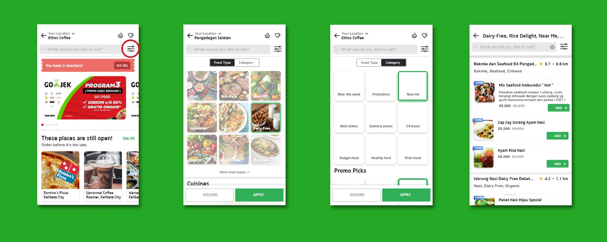

Date
2018 to 2018
My Role
1.Illustrator
2.Visual Designer
MY KEY CONTRIBUTIONS
1.Domain Research
2.Competetive Analysish
3. High Fidelity Mock up
4. User testing.
.
TOOLS USED
1.Azure
2.Adobe Illustrator
3.Adobe Photoshop
Over the last century, people’s eating habits have changed a lot. Technology hasalso contributed to the changes in consumer preference as their dependence on technology has moved them to do everything online including getting cooked meals delivered to their doorstep.
Virginia Woolf said: “One cannot think well, love well, sleep well, if one has not dined well”.
Probably, this is the one of the reason why the mobile applications for ordering food online are so popular nowadays and became great source of ideas for UI/UX designers.
Foodie is a food delivery app like swiggy and any other food delivery app, but it has its special features like, create group. If we are arranging a party, than Create group, we can create group where we can add my invitees list from my contact list or send a message to my friends and through a links they can join the group. after the group is create we can add the list of restaurants From where we want to order or from where our invitees can select the dishes. Once group is ceate we can send the invitation to our invitees. And our invites will get notification, for the party invitation. IF anyone who does t have the app will get message and through a link, they can join the group. Than the invitees can select dishes from the restaurents listing in the group. Onec they select aand submit any dishes, everyone can view the menu. This app made easy for arrang a party and order food according to invites choice.
I was the UX researcher and illustrator designer. In the beginning, I conducted and reviewed findings from our user interviews. Later on, I drew storyboards and helped finalize the design the website app through wireframes and high-fidelity mockups
1. Discoverability : How might we provide experience for different people that have different needs and preferences for eating?
2. Collecting Orders : How might we make Foodie apps suitable for eating together? How might we provide the best food quality for eating together?
In the beginning of study, I conducted an interview with several participants who use online food delivery apps regularly. After talking with people about their real experience and expectation of delivery apps, I developed a user journey map to capture the crucial pain points and challenge users may encounter and cause frustration. Here is my interview questionnaire and the journey map based on the result.
Users’ preference for different apps mostly depends on the restaurants on a certain app. Most users tend to order the restaurants they already know, so if a delivery app has more options and is able to show users the customized list of restaurants depends on each individual at the first page, it will reduce the friction of whole purchase process.
Being accurate and honest to the estimation is more important for most of the users. Users make decision according to the estimation listed on their phone, if the actual arrival time keeps being postponed or the driver failed to deliver order to an accurate location, it can frustrate users even more than they don’t have any expectation.
People tend to order food from the restaurants they already knew, and they are more price sensitive to those restaurants they are not familiar with. This point we think is very valuable to implement on the recommendation choices on the homepage and add the new restaurant as add-on item on the same route of other restaurants.
With the design requirements in mind, I started making low-fidelity wireframe on XD. There were two versions of drafts. Then after discussing with others and sorting out some features to move on next high-fidelity digital mockup.
I end up making my prototype on Adobe XD since this program allows composing simple mockup and motion. The first draft was made in blueprint color, then after setting up the structure, I started adding pictures and colors.
At the home page at GO-FOOD, I added a filter feature beside the search button. If we go back to the user that has the allergy, they could still filter the food based on promos and categories.
